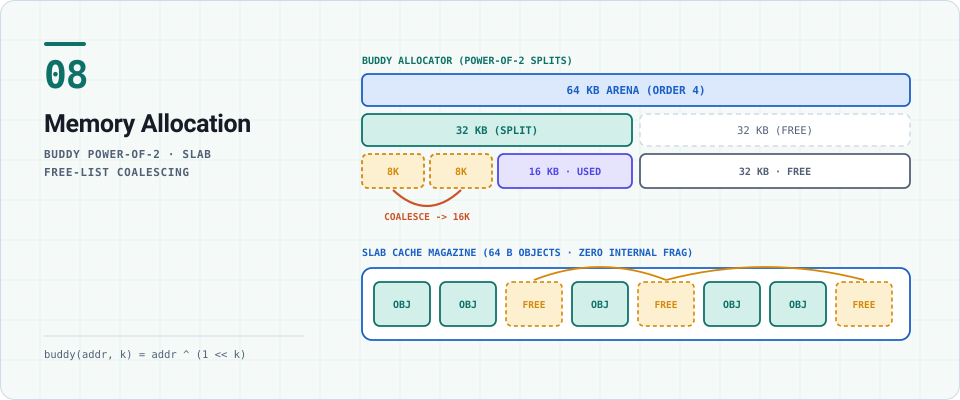
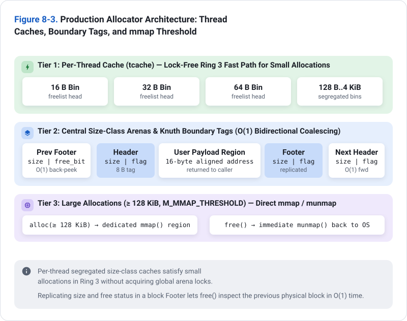

8. Memory Allocation and Management Strategies

The operating system virtual-memory subsystem manages physical RAM at coarse page granularity (typically 4 KiB on x86-64 and 16 KiB on Apple Silicon ARM64). Application software, however, dynamically allocates and deallocates millions of objects ranging from 16-byte linked-list nodes to multi-megabyte buffers with heterogeneous lifetimes. Issuing a kernel system call (mmap or brk) for every small object would impose prohibitive privilege-transition latency and waste nearly an entire 4 KiB page for a 24-byte struct.
A user-space memory allocator bridges this granularity gap. It acquires large, contiguous virtual memory regions (termed arenas) from the operating system in bulk via mmap, subdivides those regions internally in Ring 3 according to alignment and reuse policies, and returns unneeded memory to the kernel only at coarse page boundaries.
8.1 The Allocator Interface and Efficiency Constraints
A functional allocator provides two primary primitives: alloc(n), which returns an aligned address for n bytes of memory, and free(p), which returns a previously allocated block to the allocator for future reuse. The primary efficiency constraint is the high cost of system calls; therefore, an allocator must minimize its interaction with the kernel by requesting large regions and managing the lifecycle of these regions internally.
Allocators are distinguished by three architectural decisions: the placement strategy for new objects, the metadata utilized for block tracking, and the mechanism for reclaimed block reuse.
8.1.1 Requesting Raw Arenas from the Kernel (mmap)
The low-level allocators in Sections 8.2.3 and 8.3 acquire their backing memory (an arena) directly from the kernel via the Portable Operating System Interface (POSIX) mmap system call rather than calling malloc:
mmap(nullptr, capacity_bytes, PROT_READ | PROT_WRITE, MAP_PRIVATE | MAP_ANON, -1, 0)
Passing nullptr (ptr::null_mut() in Rust) lets the kernel select a page-aligned virtual base address, while capacity_bytes is rounded upward to whole hardware pages. Setting PROT_READ | PROT_WRITE programs each leaf Page Table Entry (PTE) for readable, writable, non-executable (NX = 1) memory, and MAP_PRIVATE | MAP_ANON allocates private, zero-initialized anonymous memory unbacked by any file (for which POSIX requires fd = -1 and offset = 0, as detailed in Section 7.3.1). On failure mmap returns MAP_FAILED ((void*)-1); when the arena is destroyed, munmap(arena_base, arena_capacity) returns its physical frames to the operating system.
8.1.2 Hardware Alignment and Bitwise Rounding
Before subdividing an arena into individual objects, an allocator must enforce memory alignment. Modern 64-bit processors transfer data between caches and registers in aligned 8-byte words, 16-byte Single Instruction, Multiple Data (SIMD) vectors, and 64-byte cache lines. A type requiring alignment A (always a power of two: 1, 2, 4, 8, 16, or 64 bytes) must start at an address divisible by A (address % A == 0); unaligned accesses split across cache-line boundaries, break single-line hardware atomicity, or trigger hardware alignment faults (#AC / SIGBUS). Both the System V AMD64 Application Binary Interface (ABI) and ARM64 AAPCS64 therefore require 16-byte alignment for general-purpose heap allocations.
Given a current cursor next_offset and a power-of-two alignment A = 2^k, the smallest multiple of A greater than or equal to next_offset is computed in two instructions:
aligned_offset = (next_offset + A - 1) & ~(A - 1)
Because A = 2^k, A - 1 has k trailing binary 1 bits, and ~(A - 1) clears those lowest k bits. Adding A - 1 advances any misaligned offset into the next multiple of A while leaving already-aligned offsets unchanged. Tracing three sequential allocations starting from next_offset = 0 illustrates how alignment padding arises:
alloc(8, align=8): Offset0is already 8-byte aligned ((0 + 7) & ~7 = 0). Occupies bytes0..7, advancingnext_offsetto8.alloc(3, align=8): Offset8is already 8-byte aligned ((8 + 7) & ~7 = 8). Occupies bytes8..10, advancingnext_offsetto11.alloc(16, align=16): Offset11is not a multiple of 16. Rounding up yields(11 + 15) & ~15 = 26 & ~15 = 16. Bytes11..15(5 bytes) are skipped as alignment padding so the 16-byte block begins cleanly at offset16(bytes16..31), advancingnext_offsetto32.
8.2 Arena Allocation: From Safe Index Pools to Raw Bump Allocators
An arena groups objects with identical lifetimes (such as request-scoped records in a web server, frame state in a renderer, or nodes in a syntax tree) into a single contiguous region and reclaims all of them simultaneously. Rather than introducing raw pointer arithmetic immediately, arena allocation is developed here in three progressive stages: a minimal append-only index pool requiring zero raw pointers, a generational arena with an intrusive free list supporting O(1) individual deletion and stale-handle detection, and finally a raw mmap-backed bump allocator.
8.2.1 Level 1: The Safe Index Arena (Zero unsafe)
When all arena-resident nodes share a single homogeneous type T (such as abstract syntax tree nodes, graph vertices, or linked-list entries), raw memory management is unnecessary. Placing every node inside one contiguous array (std::vector<T> in C++20 or Vec<T> in Rust 2024) wrapped in a minimal Arena<T> and linking nodes via copyable integer handles (Id) yields four immediate engineering benefits:
- Memory safety without
unsafe: Indices remain valid even when the backing array reallocates to grow, eliminating dangling pointers and self-referential borrow-checker conflicts. - Cache-line locality: Nodes allocated sequentially occupy adjacent bytes in L1/L2 caches, removing the pointer-chasing stalls characteristic of per-node
malloc/Box::newtrees. - Zero-cost bulk reclamation:
reset()callsclear(), reclaiming all nodes in O(1) while retaining the backing capacity for the next request or frame. - Production adoption: Compilers (including
rustcand LLVM), query planners, and Entity Component Systems (ECS) rely heavily on index-addressed arenas for cyclic graphs and syntax trees.
Listing 8-1. Level 1 arena: a safe, contiguous index pool allocating a 10,000-node list (C++20). (code/ch08/index_arena.cpp)
// ch08/index_arena.cpp: Level 1 arena: a minimal, zero-raw-pointer index pool.
// Nodes live contiguously inside one std::vector<T> and link via copyable Id handles.
#include <cassert>
#include <cstddef>
#include <cstdio>
#include <optional>
#include <utility>
#include <vector>
struct Id {
size_t index;
};
template <typename T>
class Arena {
public:
Id alloc(T value) {
items_.push_back(std::move(value));
return Id{items_.size() - 1};
}
const T& get(Id id) const { return items_[id.index]; }
size_t len() const { return items_.size(); }
void reset() { items_.clear(); } // Reclaims all nodes while keeping capacity
private:
std::vector<T> items_;
};
struct Node {
int value;
std::optional<Id> next;
};
int main() {
Arena<Node> arena;
std::optional<Id> head = std::nullopt;
for (int i = 0; i < 10'000; ++i) {
head = arena.alloc(Node{i, head});
}
long long sum = 0;
size_t visited = 0;
std::optional<Id> cursor = head;
while (cursor.has_value()) {
const Node& node = arena.get(*cursor);
sum += node.value;
++visited;
cursor = node.next;
}
assert(visited == 10'000);
assert(sum == 49'995'000);
printf("index arena: %zu nodes allocated, sum = %lld (verified)\n", arena.len(), sum);
arena.reset();
assert(arena.len() == 0);
printf("after reset: %zu nodes\n", arena.len());
}
Output 8-1. Verification of 10,000 contiguous arena nodes and O(1) bulk reset.
index arena: 10000 nodes allocated, sum = 49995000 (verified)
after reset: 0 nodes
Listing 8-2. The same zero-unsafe index arena in Rust. (code/ch08/index_arena.rs)
// ch08/index_arena.rs: Level 1 arena: a minimal, zero-unsafe index pool.
// Nodes live contiguously inside one Vec<T> and link via copyable Id(usize) handles.
struct Arena<T> {
items: Vec<T>,
}
#[derive(Clone, Copy, Debug, PartialEq, Eq)]
struct Id(usize);
impl<T> Arena<T> {
fn new() -> Self {
Self { items: Vec::new() }
}
fn alloc(&mut self, value: T) -> Id {
self.items.push(value);
Id(self.items.len() - 1)
}
fn get(&self, id: Id) -> &T {
&self.items[id.0]
}
fn len(&self) -> usize {
self.items.len()
}
// Reclaims all nodes in O(1) while retaining the backing capacity for reuse.
fn reset(&mut self) {
self.items.clear();
}
}
struct Node {
value: i64,
next: Option<Id>,
}
fn main() {
let mut arena = Arena::new();
let mut head: Option<Id> = None;
for i in 0..10_000_i64 {
head = Some(arena.alloc(Node { value: i, next: head }));
}
let mut sum = 0_i64;
let mut visited = 0_usize;
let mut cursor = head;
while let Some(id) = cursor {
let node = arena.get(id);
sum += node.value;
visited += 1;
cursor = node.next;
}
assert_eq!(visited, 10_000);
assert_eq!(sum, 49_995_000);
println!("index arena: {} nodes allocated, sum = {sum} (verified)", arena.len());
arena.reset();
assert_eq!(arena.len(), 0);
println!("after reset: {} nodes", arena.len());
}Output 8-2.
index arena: 10000 nodes allocated, sum = 49995000 (verified)
after reset: 0 nodes
8.2.2 Level 2: The Generational Arena with an Intrusive Free List (Zero unsafe)
The Level 1 Arena<T> in Listing 8-2 supports O(1) bulk reset(), yet it cannot reclaim individual removed objects without leaking their slots. Supporting individual deletion brings two subtle systems design questions to the foreground:
- Why avoid textbook
LinkedList<T>while still using an intrusive free list? A textbook pointer-based linked list (such asstd::collections::LinkedList) calls the global heap allocator once per node, scattering nodes across Dynamic Random-Access Memory (DRAM) and causing a cache miss on every pointer hop. By contrast, an intrusive free list inside an arena allocates zero separate nodes: each empty slot inside the contiguousVec<Slot<T>>storesEntry::Free { next_free: Option<u32> }, and the arena holds a singlefree_head: Option<u32>pointing to the most recently freed index. Inserting popsfree_headin O(1); removing pushes the freed index ontofree_headin O(1).- How this compares to the Linux kernel: Linux itself combines both halves of this insight. Its primary kernel object allocator (Unqueued Slab Allocator (
SLUB)) manages contiguous arenas (slabs) of fixed-size objects with an intrusive free list threaded directly through empty slots. Meanwhile, Linux’s intrusivestruct list_headembedsprev/nextpointers directly inside kernel objects such astask_struct(allocating zero wrapper nodes), giving kernel code three capabilities a growableVeccannot match: O(1) self-unlinking given an existing pointer to the object, simultaneous membership of one object in multiple lists (runqueue, parent’s children list, and a wait queue), and stable physical addresses that never relocate.
- How this compares to the Linux kernel: Linux itself combines both halves of this insight. Its primary kernel object allocator (Unqueued Slab Allocator (
- The hidden hazard of plain indices: stale handles (logical use-after-free / ABA problem):
Replacing raw pointers with
usizeindices eliminates segfaults and undefined behavior, yet an index is still a pointer the borrow checker cannot track. Suppose slot0holds"alpha", someone keeps a copy ofId(0), slot0is freed onto the free list, and"gamma"is inserted into recycled slot0. Dereferencing the staleId(0)will not crash; it will return"gamma"without error, trading memory corruption for undetected logical corruption.- The solution (generational indices): Pair every slot index with a generation counter (
Handle { index: u32, generation: u32 }), and store a matchinggeneration: u32inside eachSlot<T>. Every time a slot is freed, itsgenerationincrements by 1. On everyget()orremove(), the arena verifiesslot.generation == handle.generation; any stale handle from an earlier lifetime fails the check immediately and returnsNone(nullptrin C++). Production Rust crates such asslotmapandgenerational-arenause this exact design. (Note: in long-running processes where a hot slot might recycle2^32times, production implementations use 64-bit generations or retire saturated slots to prevent wraparound collisions.)
- The solution (generational indices): Pair every slot index with a generation counter (

Listing 8-3. Level 2 arena: a generational arena with an intrusive free list (C++20). (code/ch08/gen_arena.cpp)
// ch08/gen_arena.cpp: Level 2 arena: a generational arena with an intrusive
// free list threaded through empty slots (C++20 counterpart to gen_arena.rs).
//
// Each Handle pairs a slot index with a generation counter. Freeing a slot
// increments its generation, so stale handles return nullptr instead of
// silently aliasing a newer object occupying the recycled slot.
#include <cassert>
#include <cstdint>
#include <cstdio>
#include <optional>
#include <string>
#include <utility>
#include <vector>
struct Handle {
uint32_t index;
uint32_t generation;
bool operator==(const Handle&) const = default;
};
template <typename T>
class GenArena {
public:
// Inserts `value` into a recycled slot in O(1), or appends a fresh slot.
Handle insert(T value) {
if (auto index = pop_free_slot()) {
Slot& slot = slots_[*index];
slot.value.emplace(std::move(value));
slot.next_free.reset();
return Handle{*index, slot.generation};
}
uint32_t index = static_cast<uint32_t>(slots_.size());
slots_.push_back(Slot{0, std::move(value), std::nullopt});
return Handle{index, 0};
}
// Looks up `handle` in O(1), returning nullptr if the handle is stale or freed.
const T* get(Handle handle) const {
if (handle.index >= slots_.size()) {
return nullptr;
}
const Slot& slot = slots_[handle.index];
if (slot.generation != handle.generation || !slot.value.has_value()) {
return nullptr;
}
return &(*slot.value);
}
// Frees `handle` in O(1), bumps its slot generation, and pushes it onto `free_head_`.
std::optional<T> remove(Handle handle) {
if (handle.index >= slots_.size()) {
return std::nullopt;
}
Slot& slot = slots_[handle.index];
// Reject stale handles and double-removes before touching the free list.
if (slot.generation != handle.generation || !slot.value.has_value()) {
return std::nullopt;
}
// Move the live object out and thread this slot onto the intrusive free list.
std::optional<T> extracted = std::move(slot.value);
slot.value.reset();
slot.next_free = free_head_;
// Advance generation so every existing copy of `handle` becomes permanently stale.
slot.generation += 1;
free_head_ = handle.index;
return extracted;
}
size_t slot_count() const { return slots_.size(); }
private:
// Production allocators overlay `value` and `next_free` inside a std::variant
// or union (as Rust's `enum Entry<T>` does) so free links consume zero extra bytes.
struct Slot {
uint32_t generation;
std::optional<T> value;
std::optional<uint32_t> next_free;
};
std::optional<uint32_t> pop_free_slot() {
if (!free_head_.has_value()) {
return std::nullopt;
}
uint32_t index = *free_head_;
free_head_ = slots_[index].next_free;
return index;
}
std::vector<Slot> slots_;
std::optional<uint32_t> free_head_ = std::nullopt;
};
int main() {
GenArena<std::string> arena;
// 1. Insert two objects into fresh slots 0 and 1 (both at generation 0).
Handle alpha = arena.insert("alpha");
Handle beta = arena.insert("beta");
assert((alpha == Handle{0, 0}));
assert((beta == Handle{1, 0}));
// 2. Remove `alpha`; slot 0 bumps to generation 1 and joins `free_head_`.
std::optional<std::string> removed = arena.remove(alpha);
assert(removed.has_value() && *removed == "alpha");
assert(!arena.remove(alpha).has_value()); // Double-remove safely ignored
// 3. Insert `gamma`; O(1) reuse of slot 0 without growing the backing vector.
Handle gamma = arena.insert("gamma");
assert((gamma == Handle{0, 1}));
assert(arena.slot_count() == 2);
// 4. Stale `alpha` handle (index 0, gen 0) is rejected instead of returning "gamma".
assert(arena.get(alpha) == nullptr);
assert(arena.get(gamma) != nullptr && *arena.get(gamma) == "gamma");
assert(arena.get(beta) != nullptr && *arena.get(beta) == "beta");
printf("reused slot %u at generation %u (backing vector slots = %zu)\n",
gamma.index, gamma.generation, arena.slot_count());
printf("stale handle (idx=0, gen=0) -> %s (ABA prevented)\n",
arena.get(alpha) == nullptr ? "nullptr" : arena.get(alpha)->c_str());
printf("live handle (idx=0, gen=1) -> \"%s\"\n", arena.get(gamma)->c_str());
}
Output 8-3. O(1) slot recycling and deterministic rejection of stale handles.
reused slot 0 at generation 1 (backing vector slots = 2)
stale handle (idx=0, gen=0) -> nullptr (ABA prevented)
live handle (idx=0, gen=1) -> "gamma"
Listing 8-4. The same zero-unsafe generational arena with intrusive free list in Rust. (code/ch08/gen_arena.rs)
// ch08/gen_arena.rs: Level 2 arena: a zero-unsafe generational arena with an
// intrusive free list threaded directly through empty slots.
//
// Each handle pairs a slot index with a generation counter. Freeing a slot
// increments its generation, so stale handles return None instead of silently
// reading a newer object that reused the same slot.
#[derive(Clone, Copy, Debug, PartialEq, Eq)]
struct Handle {
index: u32,
generation: u32,
}
enum Entry<T> {
Occupied(T),
Free { next_free: Option<u32> },
}
impl<T> Entry<T> {
fn into_value(self) -> Option<T> {
match self {
Entry::Occupied(value) => Some(value),
Entry::Free { .. } => None,
}
}
}
struct Slot<T> {
generation: u32,
entry: Entry<T>,
}
impl<T> Slot<T> {
fn is_occupied(&self) -> bool {
matches!(self.entry, Entry::Occupied(_))
}
}
struct GenArena<T> {
slots: Vec<Slot<T>>,
free_head: Option<u32>,
}
impl<T> GenArena<T> {
fn new() -> Self {
Self {
slots: Vec::new(),
free_head: None,
}
}
// Pops the head index from the intrusive free list, if any freed slot exists.
fn pop_free_slot(&mut self) -> Option<u32> {
let index = self.free_head?;
if let Entry::Free { next_free } = self.slots[index as usize].entry {
self.free_head = next_free;
}
Some(index)
}
// Inserts `value` into a recycled slot in O(1), or appends a fresh slot.
fn insert(&mut self, value: T) -> Handle {
if let Some(index) = self.pop_free_slot() {
let slot = &mut self.slots[index as usize];
slot.entry = Entry::Occupied(value);
return Handle {
index,
generation: slot.generation,
};
}
let index = self.slots.len() as u32;
self.slots.push(Slot {
generation: 0,
entry: Entry::Occupied(value),
});
Handle {
index,
generation: 0,
}
}
// Looks up `handle` in O(1), rejecting stale handles whose generation mismatches.
fn get(&self, handle: Handle) -> Option<&T> {
let slot = self.slots.get(handle.index as usize)?;
if slot.generation != handle.generation {
return None;
}
match &slot.entry {
Entry::Occupied(value) => Some(value),
Entry::Free { .. } => None,
}
}
// Frees `handle` in O(1), advances its slot's generation, and pushes it onto `free_head`.
fn remove(&mut self, handle: Handle) -> Option<T> {
let slot = self.slots.get_mut(handle.index as usize)?;
// Reject stale handles and double-removes before modifying the free list.
if slot.generation != handle.generation || !slot.is_occupied() {
return None;
}
// Thread this slot onto the front of the intrusive free list.
let next_free = self.free_head;
let old_entry = std::mem::replace(&mut slot.entry, Entry::Free { next_free });
// Bump generation so every existing copy of `handle` becomes permanently stale.
slot.generation = slot.generation.wrapping_add(1);
self.free_head = Some(handle.index);
old_entry.into_value()
}
fn slot_count(&self) -> usize {
self.slots.len()
}
}
fn main() {
let mut arena = GenArena::new();
// 1. Insert two objects into fresh slots 0 and 1 (both at generation 0).
let alpha = arena.insert(String::from("alpha"));
let beta = arena.insert(String::from("beta"));
assert_eq!(alpha, Handle { index: 0, generation: 0 });
assert_eq!(beta, Handle { index: 1, generation: 0 });
// 2. Remove `alpha`; slot 0 increments to generation 1 and joins `free_head`.
let removed = arena.remove(alpha);
assert_eq!(removed.as_deref(), Some("alpha"));
assert_eq!(arena.remove(alpha), None); // Double-remove safely ignored
// 3. Insert `gamma`; O(1) reuse of slot 0 without growing the backing Vec.
let gamma = arena.insert(String::from("gamma"));
assert_eq!(gamma, Handle { index: 0, generation: 1 });
assert_eq!(arena.slot_count(), 2);
// 4. Stale `alpha` handle (index 0, gen 0) is rejected instead of returning "gamma".
assert_eq!(arena.get(alpha), None);
assert_eq!(arena.get(gamma).map(String::as_str), Some("gamma"));
assert_eq!(arena.get(beta).map(String::as_str), Some("beta"));
println!("reused slot {} at generation {} (backing vec slots = {})",
gamma.index, gamma.generation, arena.slot_count());
println!("stale handle (idx=0, gen=0) -> {:?} (ABA prevented)", arena.get(alpha));
println!("live handle (idx=0, gen=1) -> {:?}", arena.get(gamma));
}Output 8-4.
reused slot 0 at generation 1 (backing vec slots = 2)
stale handle (idx=0, gen=0) -> None (ABA prevented)
live handle (idx=0, gen=1) -> Some("gamma")
8.2.3 Level 3: The Raw Byte Bump Allocator (mmap-Backed)
When an arena must store heterogeneous types of varying sizes and alignments, or return direct typed references rather than integer handles, the allocator operates over a raw byte buffer. A bump allocator maintains a single monotonic offset (next_offset) within its contiguous virtual region. Allocation rounds next_offset upward to the requested alignment, verifies sufficient remaining space (aligned_offset + requested_bytes <= arena_capacity), and advances next_offset by the requested size.
The computational complexity of allocation in a bump allocator is O(1), consisting of only a few arithmetic operations with zero per-object metadata overhead. This speed is traded for coarse reclamation: individual objects cannot be freed, and reset() rewinds next_offset = 0 to reclaim the entire arena at once.

Listing 8-5. Level 3 arena: an mmap-backed bump allocator with explicit alignment rounding (C++20). (code/ch08/bump.cpp)
// ch08/bump.cpp: A linear bump (arena) allocator with explicit power-of-two alignment.
// Allocations advance a single monotonic offset; individual objects cannot be freed,
// and reset() reclaims the entire arena in O(1) time.
#include <sys/mman.h>
#include <unistd.h>
#include <cassert>
#include <cstdint>
#include <cstdio>
struct BumpAllocator {
uint8_t* arena_base; // Page-aligned start address returned by mmap()
size_t arena_capacity; // Total size of the virtual mapping in bytes
size_t next_offset; // Byte offset of the next unallocated byte
static BumpAllocator create(size_t capacity_bytes) {
// Request a private, zero-initialized anonymous virtual memory region from the kernel.
// Passing nullptr lets the kernel choose the virtual base address; fd = -1 and offset = 0
// are required by POSIX when mapping anonymous (non-file-backed) memory.
void* mapped = mmap(nullptr, capacity_bytes, PROT_READ | PROT_WRITE,
MAP_PRIVATE | MAP_ANON, -1, 0);
if (mapped == MAP_FAILED) {
perror("mmap");
return {nullptr, 0, 0};
}
return {static_cast<uint8_t*>(mapped), capacity_bytes, 0};
}
// Allocates `requested_bytes` aligned upward to a power-of-two `alignment` boundary.
void* alloc(size_t requested_bytes, size_t alignment) {
// Round `next_offset` up to the smallest multiple of `alignment` >= `next_offset`.
// Example: next_offset = 11, alignment = 16:
// (11 + 15) & ~15 = 26 & 0xFFFF...FFF0 = 16 (inserts 5 bytes of padding: 11..15).
size_t aligned_offset = (next_offset + alignment - 1) & ~(alignment - 1);
if (aligned_offset + requested_bytes > arena_capacity) {
return nullptr; // Arena exhausted
}
next_offset = aligned_offset + requested_bytes;
return arena_base + aligned_offset;
}
// Reclaims all allocations simultaneously by rewinding the bump pointer to zero.
void reset() { next_offset = 0; }
// Returns the entire virtual memory mapping to the operating system.
void destroy() { munmap(arena_base, arena_capacity); }
};
int main() {
BumpAllocator allocator = BumpAllocator::create(64 * 1024);
printf("arena: %p, %zu bytes\n\n",
static_cast<void*>(allocator.arena_base), allocator.arena_capacity);
// 1. Offset 0 is already 8-byte aligned -> occupies bytes [0, 8), next_offset becomes 8.
void* first_block = allocator.alloc(8, 8);
// 2. Offset 8 is already 8-byte aligned -> occupies bytes [8, 11), next_offset becomes 11.
void* small_block = allocator.alloc(3, 8);
// 3. Offset 11 is NOT 16-byte aligned -> inserts 5 bytes of padding [11, 16),
// then allocates 16 bytes at [16, 32), advancing next_offset to 32.
void* aligned_block = allocator.alloc(16, 16);
assert(first_block == allocator.arena_base);
assert(small_block == allocator.arena_base + 8);
assert(aligned_block == allocator.arena_base + 16);
assert(allocator.next_offset == 32);
printf("alloc(8, align=8) -> %p (offset 0, bytes 0..7)\n", first_block);
printf("alloc(3, align=8) -> %p (offset 8, bytes 8..10)\n", small_block);
printf("alloc(16, align=16) -> %p (offset 16, bytes 16..31 after 5B padding)\n", aligned_block);
printf("next_offset -> %zu\n\n", allocator.next_offset);
// Resetting rewinds next_offset to 0 so the arena can be reused immediately.
allocator.reset();
void* reused_block = allocator.alloc(8, 8);
assert(reused_block == first_block);
printf("after reset, alloc(8, align=8) -> %p (reuses offset 0: yes)\n", reused_block);
allocator.destroy();
}
Output 8-5. Three allocations demonstrating 5 bytes of alignment padding, followed by an O(1) reset.
arena: 0x10b85a000, 65536 bytes
alloc(8, align=8) -> 0x10b85a000 (offset 0, bytes 0..7)
alloc(3, align=8) -> 0x10b85a008 (offset 8, bytes 8..10)
alloc(16, align=16) -> 0x10b85a010 (offset 16, bytes 16..31 after 5B padding)
next_offset -> 32
after reset, alloc(8, align=8) -> 0x10b85a000 (reuses offset 0: yes)
Listing 8-6. The same mmap-backed bump allocator in Rust. (code/ch08/bump.rs)
// ch08/bump.rs: A linear bump (arena) allocator with explicit power-of-two alignment.
use std::error::Error;
use std::io;
use std::ptr;
struct BumpAllocator {
arena_base: *mut u8, // Page-aligned start address returned by mmap()
arena_capacity: usize, // Total size of the virtual mapping in bytes
next_offset: usize, // Byte offset of the next unallocated byte
}
impl BumpAllocator {
fn create(capacity_bytes: usize) -> io::Result<BumpAllocator> {
// SAFETY: `libc::mmap` with `MAP_PRIVATE | MAP_ANON` allocates a fresh,
// zero-initialized anonymous virtual memory region of `capacity_bytes`.
// Checking `mapped != libc::MAP_FAILED` guarantees a valid page-aligned base pointer.
unsafe {
let mapped = libc::mmap(
ptr::null_mut(),
capacity_bytes,
libc::PROT_READ | libc::PROT_WRITE,
libc::MAP_PRIVATE | libc::MAP_ANON,
-1,
0,
);
if mapped == libc::MAP_FAILED {
return Err(io::Error::last_os_error());
}
Ok(BumpAllocator {
arena_base: mapped.cast::<u8>(),
arena_capacity: capacity_bytes,
next_offset: 0,
})
}
}
// Allocates `requested_bytes` aligned upward to a power-of-two `alignment` boundary.
fn alloc(&mut self, requested_bytes: usize, alignment: usize) -> Option<*mut u8> {
// Round `next_offset` up to the smallest multiple of `alignment` >= `next_offset`.
// Example: next_offset = 11, alignment = 16:
// (11 + 15) & !15 = 26 & !15 = 16 (inserts 5 bytes of padding: 11..15).
let aligned_offset = (self.next_offset + alignment - 1) & !(alignment - 1);
if aligned_offset + requested_bytes > self.arena_capacity {
return None;
}
self.next_offset = aligned_offset + requested_bytes;
// SAFETY: The bounds check `aligned_offset + requested_bytes <= self.arena_capacity`
// proves that `arena_base.add(aligned_offset)` remains strictly within the mapped arena.
Some(unsafe { self.arena_base.add(aligned_offset) })
}
// Reclaims all allocations simultaneously by rewinding the bump pointer to zero.
fn reset(&mut self) {
self.next_offset = 0;
}
}
impl Drop for BumpAllocator {
fn drop(&mut self) {
// SAFETY: `arena_base` and `arena_capacity` match the exact arguments from `mmap`.
unsafe { libc::munmap(self.arena_base.cast::<libc::c_void>(), self.arena_capacity) };
}
}
fn main() -> Result<(), Box<dyn Error>> {
let mut allocator = BumpAllocator::create(64 * 1024)?;
println!("arena: {:p}, {} bytes\n", allocator.arena_base, allocator.arena_capacity);
// 1. Offset 0 is already 8-byte aligned -> occupies bytes [0, 8), next_offset becomes 8.
let first_block = allocator.alloc(8, 8).ok_or("arena exhausted on first_block")?;
// 2. Offset 8 is already 8-byte aligned -> occupies bytes [8, 11), next_offset becomes 11.
let small_block = allocator.alloc(3, 8).ok_or("arena exhausted on small_block")?;
// 3. Offset 11 is NOT 16-byte aligned -> inserts 5 bytes of padding [11, 16),
// then allocates 16 bytes at [16, 32), advancing next_offset to 32.
let aligned_block = allocator.alloc(16, 16).ok_or("arena exhausted on aligned_block")?;
assert_eq!(first_block, allocator.arena_base);
assert_eq!(small_block as usize - allocator.arena_base as usize, 8);
assert_eq!(aligned_block as usize - allocator.arena_base as usize, 16);
assert_eq!(allocator.next_offset, 32);
println!("alloc(8, align=8) -> {first_block:p} (offset 0, bytes 0..7)");
println!("alloc(3, align=8) -> {small_block:p} (offset 8, bytes 8..10)");
println!("alloc(16, align=16) -> {aligned_block:p} (offset 16, bytes 16..31 after 5B padding)");
println!("next_offset -> {}\n", allocator.next_offset);
// Resetting rewinds next_offset to 0 so the arena can be reused immediately.
allocator.reset();
let reused_block = allocator.alloc(8, 8).ok_or("arena exhausted after reset")?;
assert_eq!(reused_block, first_block);
println!("after reset, alloc(8, align=8) -> {reused_block:p} (reuses offset 0: yes)");
Ok(())
}Output 8-6.
arena: 0x102252000, 65536 bytes
alloc(8, align=8) -> 0x102252000 (offset 0, bytes 0..7)
alloc(3, align=8) -> 0x102252008 (offset 8, bytes 8..10)
alloc(16, align=16) -> 0x102252010 (offset 16, bytes 16..31 after 5B padding)
next_offset -> 32
after reset, alloc(8, align=8) -> 0x102252000 (reuses offset 0: yes)
Extending a raw byte bump allocator into a production typed Rust arena (such as bumpalo) introduces three subtle language and memory-model invariants:
- Shared-borrow allocation (
&selfto&'arena mut T): In Listing 8-6,alloc(&mut self, ...)requires exclusive access to the allocator, preventing callers from holding multiple live references returned by the same arena simultaneously. Production arenas wrap the bump cursor in interior mutability (Cell<*mut u8>) soalloc<T>(&self, value: T) -> &mut Taccepts&self. Every returned reference carries the lifetime of&self, enabling arbitrary cross-referencing graphs while the borrow checker statically forbids any reference from outliving the arena; becauseCellis neitherSendnorSync, single-threaded ownership is enforced at compile time. - Pointer provenance: Storing the active cursor as a typed raw pointer (
*mut u8) and computing alignment viaptr::align_offsetandptr::add, rather than casting pointers tousizeintegers and back, preserves strict pointer provenance under Rust’s Stacked/Tree Borrows models and verifies cleanly under Miri. - Destructor omission: Rewinding or unmapping a raw bump arena reclaims the backing bytes without executing per-object destructors (
Dropin Rust,~T()in C++). Placing heap-owning types such asVecorStringinside a raw bump arena leaks their secondary heap allocations unless the arena records an explicit drop-function list (as intyped-arena) or restricts stored values to plain data and arena-scoped references.
8.2.4 Backing Store Trade-Off: Global-Allocator Chunks (malloc / std::alloc) vs. Direct mmap
Listings 8-5 and 8-6 call mmap directly to expose the exact OS boundary. In production systems, however, choosing between acquiring chunks from the global allocator (malloc / std::alloc) and mapping virtual memory directly with mmap depends on workload geometry:
| Dimension | Global-Allocator Chunks (malloc / std::alloc, e.g., 64 KiB) | Direct mmap Virtual Reservation (MAP_NORESERVE) |
|---|---|---|
| Syscall & page-fault overhead | Amortized; small chunks (64 KiB) are served from warm, already-faulted user-space arenas with zero kernel traps. | Each new mmap invokes a kernel trap and triggers minor page faults upon first write to every freshly mapped page. |
| Contiguity & oversized requests | Requires a chunk list (Vec<(NonNull<u8>, Layout)>) and a cold grow() path; leaves tail waste at chunk boundaries. | Single contiguous virtual range (e.g., 64 GiB reserved, committed lazily on demand); no chunk list and no relocation. |
Reclamation on reset() | Rewinding a chunked arena retains committed RAM in user space until the arena itself is dropped. | madvise(base, used, MADV_DONTNEED) returns physical frames to the kernel while keeping the virtual range mapped and zeroed on reuse. |
| Hardware page control | Controlled indirectly by the global allocator. | Direct access to huge pages (MAP_HUGETLB / MADV_HUGEPAGE) and hardware guard pages (mprotect(..., PROT_NONE)). |
| Portability & tooling | Fully portable across POSIX and Windows; automatically checked by AddressSanitizer, Valgrind, and Miri. | OS-specific (mmap vs. VirtualAlloc(MEM_RESERVE)); may fail under strict overcommit (vm.overcommit_memory=2) and requires manual ASan poisoning. |
As a general rule, application-level arenas such as bumpalo allocate geometrically growing chunks (starting around 64 KiB) from malloc or std::alloc, avoiding syscall overhead and preserving sanitizer visibility. Direct mmap reserve-then-commit arenas are reserved for systems requiring single-span address stability, explicit huge-page or guard-page control, or immediate OS frame reclamation, most notably database buffer pools, JIT code heaps, and game-engine frame allocators.
8.3 Explicit Management: Free-List Allocation
To support the independent deallocation of individual objects, an allocator must track the size and ownership state of each allocated region. A free-list allocator accomplishes this by embedding an in-band BlockHeader immediately preceding every user payload in memory:
[ BlockHeader (24 bytes): payload_bytes | is_free | next_block ] [ User Payload (payload_bytes) ]
^ ^
header pointer pointer returned to caller
This layout establishes two direct pointer-arithmetic invariants:
- On
alloc(): After finding a suitable freeBlockHeader* current, the allocator advances past the 24-byte header (current + 1in C++ pointer arithmetic, orcurrent.cast::<u8>().add(HEADER_BYTES)in Rust) and returns that payload address to the caller. - On
free(user_payload_ptr): Because the caller supplies only the payload pointer, the allocator subtractssizeof(BlockHeader)(24 bytes) fromuser_payload_ptrto recover the hiddenBlockHeader, readspayload_bytes, and setsis_free = true.
8.3.1 First-Fit Search, Splitting, and Coalescing
The allocator’s performance and fragmentation profile are governed by three policies:
- Allocation Policy (First-Fit): Starting at
head_block,alloc(requested_bytes)traverses the block list in address order and selects the first block satisfyingis_free && payload_bytes >= requested_bytes. - Splitting (Suppressing Internal Fragmentation): When a chosen free block is significantly larger than
requested_bytes(for example, satisfyingalloc(150)inside a 200-byte hole), handing out all 200 bytes wastes 50 bytes of internal fragmentation. Wheneverleftover_bytes = payload_bytes - requested_bytes >= sizeof(BlockHeader) + MIN_SPLIT_PAYLOAD(24 + 16 = 40bytes), the allocator writes a newBlockHeaderimmediately after the 150-byte payload, carving a reusable free block of200 - 150 - 24 = 26bytes and linking it into the list. - Coalescing (Eliminating External Fragmentation): Freeing adjacent blocks without merging them shatters the arena into small, unusable holes, causing external fragmentation. Upon
free(),coalesce_adjacent_free_blocks()verifies physical contiguity (neighbor == current + sizeof(BlockHeader) + current->payload_bytes) and merges consecutive free blocks into a single unified region, reclaiming both the neighbor’s payload and its redundant 24-byte header (150 + 24 + 26 = 200bytes restored).

Listing 8-7. A first-fit free-list allocator with splitting and coalescing (C++20). (code/ch08/free_list.cpp)
// ch08/free_list.cpp: First-fit free-list allocator with in-band headers,
// block splitting, and adjacent free-block coalescing.
// Written with flat control flow (early returns and small helpers) to keep logic clear.
#include <sys/mman.h>
#include <unistd.h>
#include <cassert>
#include <cstdint>
#include <cstdio>
// Metadata stored immediately before every user payload (24 bytes on 64-bit systems).
struct BlockHeader {
size_t payload_bytes; // Usable payload bytes immediately following this header
bool is_free; // true = available; false = owned by caller
BlockHeader* next_block; // Next block in physical address order inside the arena
};
constexpr size_t kMinSplitPayload = 16;
struct FreeListHeap {
uint8_t* arena_base;
size_t arena_capacity;
BlockHeader* head_block;
static FreeListHeap create(size_t capacity_bytes) {
void* mapped = mmap(nullptr, capacity_bytes, PROT_READ | PROT_WRITE,
MAP_PRIVATE | MAP_ANON, -1, 0);
if (mapped == MAP_FAILED) {
perror("mmap");
return {nullptr, 0, nullptr};
}
auto* initial_header = static_cast<BlockHeader*>(mapped);
initial_header->payload_bytes = capacity_bytes - sizeof(BlockHeader);
initial_header->is_free = true;
initial_header->next_block = nullptr;
return {static_cast<uint8_t*>(mapped), capacity_bytes, initial_header};
}
// Splits `block` if the leftover space fits both a new BlockHeader and >= 16 payload bytes.
static void split_if_large_enough(BlockHeader* block, size_t requested_bytes) {
size_t leftover_bytes = block->payload_bytes - requested_bytes;
if (leftover_bytes < sizeof(BlockHeader) + kMinSplitPayload) {
return;
}
// `block + 1` steps past the 24-byte header to the first byte of the user payload.
uint8_t* payload_start = reinterpret_cast<uint8_t*>(block + 1);
auto* split_header = reinterpret_cast<BlockHeader*>(payload_start + requested_bytes);
split_header->payload_bytes = leftover_bytes - sizeof(BlockHeader);
split_header->is_free = true;
split_header->next_block = block->next_block;
block->payload_bytes = requested_bytes;
block->next_block = split_header;
}
// Returns true when `current` and `neighbor` are both free and physically contiguous.
static bool can_coalesce(const BlockHeader* current, const BlockHeader* neighbor) {
if (!current->is_free || !neighbor->is_free) return false;
const uint8_t* current_end =
reinterpret_cast<const uint8_t*>(current + 1) + current->payload_bytes;
return reinterpret_cast<const uint8_t*>(neighbor) == current_end;
}
// First-fit allocation: returns a payload pointer or nullptr if no free block fits.
void* alloc(size_t requested_bytes) {
for (BlockHeader* current = head_block; current != nullptr; current = current->next_block) {
if (!current->is_free || current->payload_bytes < requested_bytes) {
continue;
}
split_if_large_enough(current, requested_bytes);
current->is_free = false;
return reinterpret_cast<uint8_t*>(current + 1);
}
return nullptr;
}
// Releases a payload pointer and merges any physically adjacent free blocks.
void free(void* user_payload_ptr) {
// Step backward by sizeof(BlockHeader) (24 bytes) to recover the hidden header.
auto* header = reinterpret_cast<BlockHeader*>(
static_cast<uint8_t*>(user_payload_ptr) - sizeof(BlockHeader));
header->is_free = true;
coalesce_adjacent_free_blocks();
}
void coalesce_adjacent_free_blocks() {
BlockHeader* current = head_block;
while (current != nullptr && current->next_block != nullptr) {
BlockHeader* neighbor = current->next_block;
if (!can_coalesce(current, neighbor)) {
current = neighbor;
continue;
}
// Absorb both the neighbor's payload and its redundant 24-byte header.
current->payload_bytes += sizeof(BlockHeader) + neighbor->payload_bytes;
current->next_block = neighbor->next_block;
}
}
void dump_block_map() const {
printf(" block map:\n");
int block_index = 0;
for (BlockHeader* current = head_block; current != nullptr;
current = current->next_block, ++block_index) {
size_t byte_offset =
static_cast<size_t>(reinterpret_cast<uint8_t*>(current) - arena_base);
printf(" [%d] offset %zu payload %zu %s\n",
block_index, byte_offset, current->payload_bytes,
current->is_free ? "free" : "used");
}
}
void destroy() { munmap(arena_base, arena_capacity); }
};
int main() {
FreeListHeap heap = FreeListHeap::create(256 * 1024);
printf("arena: %p, %zu bytes, header %zu bytes\n\n",
static_cast<void*>(heap.arena_base), heap.arena_capacity, sizeof(BlockHeader));
void* block_a = heap.alloc(100);
void* block_b = heap.alloc(200);
void* block_c = heap.alloc(300);
printf("after alloc(100), alloc(200), alloc(300):\n");
heap.dump_block_map();
heap.free(block_b);
printf("\nafter free(block_b):\n");
heap.dump_block_map();
void* block_d = heap.alloc(150);
assert(block_d == block_b);
printf("\nafter alloc(150) into block_b's hole:\n");
heap.dump_block_map();
printf("block_d reuses block_b's address: yes\n");
heap.free(block_a);
heap.free(block_d);
heap.free(block_c);
assert(heap.head_block->is_free && heap.head_block->next_block == nullptr);
printf("\nafter freeing all blocks (coalesced back to 1 free block):\n");
heap.dump_block_map();
heap.destroy();
}
Output 8-7. The block map after initial allocations, free, split reuse, and full coalescing.
arena: 0x108a18000, 262144 bytes, header 24 bytes
after alloc(100), alloc(200), alloc(300):
block map:
[0] offset 0 payload 100 used
[1] offset 124 payload 200 used
[2] offset 348 payload 300 used
[3] offset 672 payload 261448 free
after free(block_b):
block map:
[0] offset 0 payload 100 used
[1] offset 124 payload 200 free
[2] offset 348 payload 300 used
[3] offset 672 payload 261448 free
after alloc(150) into block_b's hole:
block map:
[0] offset 0 payload 100 used
[1] offset 124 payload 150 used
[2] offset 298 payload 26 free
[3] offset 348 payload 300 used
[4] offset 672 payload 261448 free
block_d reuses block_b's address: yes
after freeing all blocks (coalesced back to 1 free block):
block map:
[0] offset 0 payload 262120 free
Listing 8-8. The same free-list allocator in Rust. (code/ch08/free_list.rs)
// ch08/free_list.rs: First-fit free-list allocator with in-band headers,
// block splitting, and adjacent free-block coalescing in Rust.
// Written with flat control flow (early returns and small helpers) to keep logic clear.
use std::error::Error;
use std::io;
use std::ptr;
#[derive(Clone, Copy)]
struct BlockHeader {
payload_bytes: usize,
is_free: bool,
next_block: *mut BlockHeader,
}
const HEADER_BYTES: usize = std::mem::size_of::<BlockHeader>();
const MIN_SPLIT_PAYLOAD: usize = 16;
struct FreeListHeap {
arena_base: *mut u8,
arena_capacity: usize,
head_block: *mut BlockHeader,
}
impl FreeListHeap {
fn create(capacity_bytes: usize) -> io::Result<FreeListHeap> {
// SAFETY: `mmap` allocates a page-aligned, zero-initialized anonymous region.
// After verifying `mapped != MAP_FAILED`, we initialize a single root BlockHeader at offset 0.
unsafe {
let mapped = libc::mmap(
ptr::null_mut(),
capacity_bytes,
libc::PROT_READ | libc::PROT_WRITE,
libc::MAP_PRIVATE | libc::MAP_ANON,
-1,
0,
);
if mapped == libc::MAP_FAILED {
return Err(io::Error::last_os_error());
}
let initial_header = mapped.cast::<BlockHeader>();
ptr::write(
initial_header,
BlockHeader {
payload_bytes: capacity_bytes - HEADER_BYTES,
is_free: true,
next_block: ptr::null_mut(),
},
);
Ok(FreeListHeap {
arena_base: mapped.cast::<u8>(),
arena_capacity: capacity_bytes,
head_block: initial_header,
})
}
}
// Splits `block` if leftover bytes fit a new BlockHeader plus >= MIN_SPLIT_PAYLOAD bytes.
// SAFETY: Caller guarantees `block` is a valid initialized header with `payload_bytes >= requested_bytes`.
unsafe fn split_if_large_enough(block: *mut BlockHeader, requested_bytes: usize) {
let leftover_bytes = unsafe { (*block).payload_bytes - requested_bytes };
if leftover_bytes < HEADER_BYTES + MIN_SPLIT_PAYLOAD {
return;
}
// SAFETY: `HEADER_BYTES + requested_bytes` lies strictly inside `block`'s payload span.
unsafe {
let split_header = block
.cast::<u8>()
.add(HEADER_BYTES + requested_bytes)
.cast::<BlockHeader>();
ptr::write(
split_header,
BlockHeader {
payload_bytes: leftover_bytes - HEADER_BYTES,
is_free: true,
next_block: (*block).next_block,
},
);
(*block).payload_bytes = requested_bytes;
(*block).next_block = split_header;
}
}
// Returns true when `current` and `neighbor` are both free and physically contiguous.
// SAFETY: Caller guarantees both pointers refer to valid initialized headers inside the arena.
unsafe fn can_coalesce(current: *const BlockHeader, neighbor: *const BlockHeader) -> bool {
unsafe {
if !(*current).is_free || !(*neighbor).is_free {
return false;
}
let current_end = current
.cast::<u8>()
.add(HEADER_BYTES + (*current).payload_bytes);
neighbor.cast::<u8>() == current_end
}
}
// First-fit allocation: scans the block chain with flat guard clauses.
fn alloc(&mut self, requested_bytes: usize) -> Option<*mut u8> {
let mut current = self.head_block;
while !current.is_null() {
// SAFETY: Every pointer in the intrusive list is an initialized in-bounds BlockHeader.
unsafe {
if !(*current).is_free || (*current).payload_bytes < requested_bytes {
current = (*current).next_block;
continue;
}
Self::split_if_large_enough(current, requested_bytes);
(*current).is_free = false;
return Some(current.cast::<u8>().add(HEADER_BYTES));
}
}
None
}
// Releases a payload pointer and merges any physically adjacent free blocks.
fn free(&mut self, user_payload_ptr: *mut u8) {
// SAFETY: `user_payload_ptr` was returned by `alloc()` at `header + HEADER_BYTES`.
unsafe {
let header = user_payload_ptr.sub(HEADER_BYTES).cast::<BlockHeader>();
(*header).is_free = true;
}
self.coalesce_adjacent_free_blocks();
}
fn coalesce_adjacent_free_blocks(&mut self) {
let mut current = self.head_block;
// SAFETY: `current` and `neighbor` are valid initialized headers within the arena.
unsafe {
while !current.is_null() && !(*current).next_block.is_null() {
let neighbor = (*current).next_block;
if !Self::can_coalesce(current, neighbor) {
current = neighbor;
continue;
}
// Absorb both the neighbor's payload and its redundant 24-byte header.
(*current).payload_bytes += HEADER_BYTES + (*neighbor).payload_bytes;
(*current).next_block = (*neighbor).next_block;
}
}
}
fn dump_block_map(&self) {
println!(" block map:");
let mut current = self.head_block;
let mut block_index = 0;
// SAFETY: Read-only traversal of the validated intrusive header list.
unsafe {
while !current.is_null() {
let byte_offset = current.cast::<u8>() as usize - self.arena_base as usize;
println!(
" [{block_index}] offset {byte_offset} payload {} {}",
(*current).payload_bytes,
if (*current).is_free { "free" } else { "used" }
);
current = (*current).next_block;
block_index += 1;
}
}
}
}
impl Drop for FreeListHeap {
fn drop(&mut self) {
// SAFETY: Unmaps the exact virtual region created in `create()`.
unsafe { libc::munmap(self.arena_base.cast::<libc::c_void>(), self.arena_capacity) };
}
}
fn main() -> Result<(), Box<dyn Error>> {
let mut heap = FreeListHeap::create(256 * 1024)?;
println!(
"arena: {:p}, {} bytes, header {} bytes\n",
heap.arena_base, heap.arena_capacity, HEADER_BYTES
);
let block_a = heap.alloc(100).ok_or("heap exhausted on block_a")?;
let block_b = heap.alloc(200).ok_or("heap exhausted on block_b")?;
let block_c = heap.alloc(300).ok_or("heap exhausted on block_c")?;
println!("after alloc(100), alloc(200), alloc(300):");
heap.dump_block_map();
heap.free(block_b);
println!("\nafter free(block_b):");
heap.dump_block_map();
let block_d = heap.alloc(150).ok_or("heap exhausted on block_d")?;
assert_eq!(block_d, block_b);
println!("\nafter alloc(150) into block_b's hole:");
heap.dump_block_map();
println!("block_d reuses block_b's address: yes");
heap.free(block_a);
heap.free(block_d);
heap.free(block_c);
// SAFETY: `head_block` is always a valid initialized header spanning the coalesced arena.
unsafe {
assert!((*heap.head_block).is_free && (*heap.head_block).next_block.is_null());
}
println!("\nafter freeing all blocks (coalesced back to 1 free block):");
heap.dump_block_map();
Ok(())
}Output 8-8.
arena: 0x11009c000, 262144 bytes, header 24 bytes
after alloc(100), alloc(200), alloc(300):
block map:
[0] offset 0 payload 100 used
[1] offset 124 payload 200 used
[2] offset 348 payload 300 used
[3] offset 672 payload 261448 free
after free(block_b):
block map:
[0] offset 0 payload 100 used
[1] offset 124 payload 200 free
[2] offset 348 payload 300 used
[3] offset 672 payload 261448 free
after alloc(150) into block_b's hole:
block map:
[0] offset 0 payload 100 used
[1] offset 124 payload 150 used
[2] offset 298 payload 26 free
[3] offset 348 payload 300 used
[4] offset 672 payload 261448 free
block_d reuses block_b's address: yes
after freeing all blocks (coalesced back to 1 free block):
block map:
[0] offset 0 payload 262120 free
8.4 Production Allocator Architecture: Boundary Tags, Size Classes, and mmap
The educational free-list allocator in Listing 8-7 demonstrates core mechanics, yet exhibits three bottlenecks under multi-threaded production workloads: O(N) linear free-list search, O(N) coalescing traversal, and global lock contention across cores. Production allocators (jemalloc, tcmalloc, mimalloc, and glibc ptmalloc2) eliminate these bottlenecks through a three-tier hierarchy.
8.4.1 Knuth’s Boundary Tags for O(1) Bidirectional Coalescing
In Listing 8-7, coalescing a freed block with its preceding physical neighbor required scanning the list from head_block in O(N) time because each header links only forward. Donald Knuth’s Boundary Tag architecture eliminates linear scanning by replicating the 8-byte block descriptor (payload_bytes | allocated_bit, exploiting the fact that 16-byte aligned sizes leave the lowest 4 bits zero) as both a Header before the payload and a Footer immediately after the payload:
- Forward Coalescing (O(1)): Add
current->sizetocurrentto inspect the next physical block’s Header directly. - Backward Coalescing (O(1)): Step backward 8 bytes prior to
current’s Header to read the previous physical block’s Footer. When the footer’s allocated bit is0, subtract its encoded size to jump directly to the predecessor’s Header and merge in constant time.
8.4.2 Segregated Size Classes and Per-Thread Caches (tcache)
Rather than searching a heterogeneous list of arbitrary block sizes under a single global mutex, production allocators partition small allocations into segregated size classes (discrete fixed-size bins such as 16 B, 32 B, 48 B, 64 B, …, 4 KiB). Each bin manages a homogeneous slab of identically sized slots, eliminating external fragmentation within a size class and reducing allocation and deallocation to O(1) stack pop and push operations.
To eliminate multi-core lock contention, each thread maintains a private thread-local cache (tcache) storing pre-allocated slots for every small size class. The vast majority of small malloc() and free() calls complete in Ring 3 against thread-private cache lines with zero atomic operations and zero mutex acquisitions, contacting central arenas only when a thread-local bin empties or overflows.
8.4.3 The brk / Arena vs. mmap Allocation Threshold (M_MMAP_THRESHOLD)
Sub-allocating small objects out of persistent arenas amortizes system-call overhead, whereas placing a multi-megabyte temporary buffer inside a shared arena risks retaining large physical memory spans if a single tiny allocation remains live near the end of the arena. Production allocators enforce a size threshold (M_MMAP_THRESHOLD, typically 128 KiB):
- Allocations
< 128 KiB: Served from per-threadtcachebins and central size-class arenas backed by persistentmmap/brkspans. - Allocations
≥ 128 KiB: Routed directly to standalone kernelmmap(MAP_PRIVATE | MAP_ANON)mappings. Uponfree(), the allocator invokesmunmap()immediately, returning the physical frames directly to the operating system kernel.

Memory allocators reconcile kernel page granularity with fine-grained object lifetimes: safe index pools and raw bump allocators trade individual deallocation for O(1) bulk resets, free-list allocators enforce splitting and coalescing via in-band headers, and production allocators achieve lock-free O(1) scaling via per-thread size-class caches, Knuth boundary tags, and direct mmap above 128 KiB.
In Listing 8-4 (code/ch08/gen_arena.rs), comment out the slot.generation += 1 increment inside remove() and re-run. Observe how the stale alpha handle returns "gamma" without error from the recycled slot instead of None, demonstrating the logical ABA hazard of plain integer indices.
Returning unaligned pointers from a custom bump or free-list allocator. Omitting power-of-two rounding ((offset + A - 1) & ~(A - 1)) violates the 16-byte ABI alignment invariant, triggering undefined behavior in C++ and Rust and hardware alignment faults (SIGBUS) on strict SIMD vector loads.